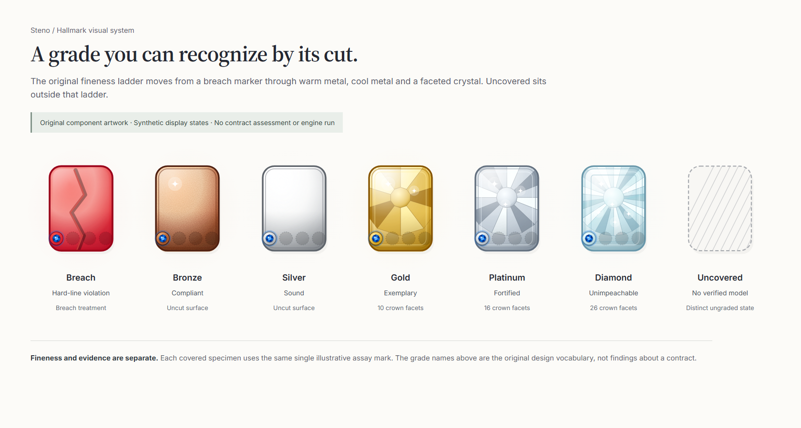

A persistent matter context
The document, review stage and surrounding matter stay present as attention moves between views.
Steno · Legal workflow & product design
I work with contracts. I wanted a way to ask what an agreement would do in a particular situation, then follow the answer back to its language. Steno brings the document, its connections and the questions under review together. The legal decisions stay with the person reviewing it.

The document, review stage and surrounding matter stay present as attention moves between views.
A map makes it possible to follow a selected clause or finding into its surrounding dependencies.
The document and decision rail place review choices beside the language they concern.
Steno’s emblem system borrows from an assayer’s stamp: a struck tablet, a modeled grade and individual evidence marks. The design makes two questions visible together—what grade was assigned, and what kinds of checks support it—without collapsing them into one reassuring badge.

The original vocabulary runs from Breach through Bronze, Silver, Gold, Platinum and Diamond. Metal, crown facets and rank marks differentiate the grades. “Uncovered” is a separate ungraded state.
Four colored medallions and custom glyphs name Engine, Cross-check, Exception and Authority. Empty settings keep absent marks visible. Adding a mark does not promote the grade.
A compact row chip carries the emblem, grade and rank marks. The expanded treatment adds coverage, corroboration and a proof-trail area, including a clear pending state when verification is absent.
The current Cross-check legend says it shares extracted facts with the primary check. Its visual category therefore identifies corroboration without promising independent evidence. Grade and assay marks remain separate; the earlier design brief’s grade cap is absent from the current interface.
These are authentic current component renders, distinct from the archived workspace prototype above. The Hallmark’s design history includes a dedicated Claude Design brief and an implementation port. This presentation preserves that authored visual language with new synthetic inputs.
Grade words such as “Exemplary” and “Unimpeachable,” and the title “Assay Certificate,” are original interface vocabulary shown for design inspection. Human review remains central to Steno’s purpose.
A reported vendor incident can bring notice obligations, indemnity language and liability limits into the same review. Reading each clause in isolation makes it harder to see how the wording interacts.
Steno's direction is a matter-centered contract-and-law workstation: structured information, explicit checks, traceable relationships and a person who retains judgment. It is a personal experimental project, not a completed legal service.
The preserved design uses translucent glass panels, a serif display face, restrained sans-serif controls and monospace metadata. The matter workspace gives the document and its context a stable home.
The Matter Map design has a Layers rail, a graph and an Inspector. Its specification assigns different meanings to visual channels so evidence and uncertainty can be read independently.
The document workstation brings selected-clause context and review choices into an editor-first arrangement. These are concrete design decisions about how attention should move through a legal task.
The separate drafting example uses newly authored fictional clauses. Two existing Steno component checks found a notice-mechanics linkage issue and an indemnity/cap wording issue. Illustrative edits removed those findings when the same checks ran again.
Switch between the initial draft and proposed edits. The example keeps the unresolved human-review questions visible even when the findings disappear.
This explanatory interface is distinct from the product designs above. It replays captured component results; it does not run Steno in the browser.
The workspace images render the preserved unified prototype with synthetic content. The separate Hallmark boards render the current emblem component with synthetic props. Neither establishes end-to-end legal processing.
Two checks returned two findings before the illustrative edits and zero afterward. Three existing focused tests passed.
Clock triggers, claim coverage, risk allocation and legal sufficiency remain matters for review. No findings from two checks do not clear an agreement.
The recorded checks did not exercise document ingestion, graph construction, editor integration, persistence or the full application's release workflow.
The underlying Steno application remains private. This case study publishes selected design evidence and an independently authored synthetic example.
This guide describes the separate recorded component checks. It is not the prototype recording and does not run a legal engine in your browser.
The example brings notice, indemnity and liability-cap language into one review. Its input is four manually structured fictional clauses with an empty relationship list. The revised notice is recognized through its text.
The existing checks identify a notice-mechanics linkage issue and an indemnity/cap wording issue.
Add a Notices cross-reference. State that the general $100,000 cap excludes indemnity, with a separate $300,000 limit for that obligation.
Someone still needs to assess clock triggers, claim coverage and risk allocation in context.